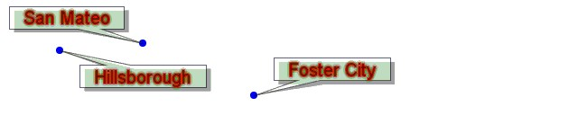

|
|||||||||||
| PREV CLASS NEXT CLASS | FRAMES NO FRAMES | ||||||||||
| SUMMARY: NESTED | FIELD | CONSTR | METHOD | DETAIL: FIELD | CONSTR | METHOD | ||||||||||
java.lang.Object
|
+--com.esri.mo2.map.draw.BaseSymbol
|
+--com.esri.mo2.map.draw.BaseFontSymbol
|
+--com.esri.mo2.map.draw.BaseTextSymbol
|
+--com.esri.mo2.map.draw.CalloutMarkerSymbol
Provides a simple symbol for adding labels to a Map.
The CalloutMarkerSymbol allows to label the point features that has high visual priority.
This symbol should be used for labeling only as the parameter for SimpleLabelRenderer.
There is a number of attributes applied to change the visual appearance of CalloutMarker symbol.
The symbol supports next attrites:
Antialiasing can be true or false, default is false.
Transparency is transparency from 0.0 to 1.0, default is 1.0
Font is font for textstring, default is "Dialog" PLAIN and 12 height.
Color is textstring color, default is black.
Outline is color for border around each letter, default is null (no outline).
Glowing is color for glowing around the textstring, default is null (no glowing).
Shadow is color for shadow behind the textstring, default is null (no shadow).
BlockOut is color of background box drawing around the textstring, default is null (no blockout).
FeatureWeight, LabelWeight, LabelBufferRatio, HowManyLabels, LabelPriorities.
RotationalAngles, LineLabelPosition have a special mean, see LabelEngine for details.
The result of the next example is shown on the picture.
CalloutMarkerSymbol cmSymbol = new CalloutMarkerSymbol();

cmSymbol.setAntialiasing(true);
cmSymbol.setFont( new Font("Courier", Font.Plain, 20) );
cmSymbol.setTransparency(0.6);
cmSymbol.setOutline( new Color(255,0,0) );
cmSymbol.setGlowing(new Color(0,128,0) );
cmSymbol.setShadow( new Color(64,64,64) );
cmSymbol.setBlockout( new Color(0,255,0) );
| Field Summary | |
static Color |
DEFAULT_BACKCOLOR
This constant defines the default value for back color. |
static Color |
DEFAULT_BOUNDARYCOLOR
This constant defines the default value for boundary color. |
static double |
DEFAULT_INTERVAL
This constant defines the default value for interval. |
| Fields inherited from class com.esri.mo2.map.draw.BaseFontSymbol |
DEFAULT_BLOCKOUT, DEFAULT_COLOR, DEFAULT_FONT, DEFAULT_GLOWING, DEFAULT_OUTLINE, DEFAULT_SHADOW, LABELMODE_FULL, LABELMODE_NUMERICONLY, PRINTMODE_ALLOWER, PRINTMODE_ALLUPPER, PRINTMODE_NONE, PRINTMODE_PRETTYPRINT, PRINTMODE_TITLECAPS |
| Fields inherited from class com.esri.mo2.map.draw.BaseSymbol |
DEFAULT_ANTIALIASING, DEFAULT_TRANSPARENCY |
| Constructor Summary | |
CalloutMarkerSymbol()
|
|
| Method Summary | |
void |
draw(String text,
double x,
double y,
double angle,
Graphics2D g2,
FeatureGeometry fg)
This method is called by a label engine to render a label. |
Color |
getBackColor()
Obtains the Color used for rendering the callout background. |
Color |
getBoundaryColor()
Obtains the Color used for rendering the boundary. |
double |
getInterval()
Obtains the distance between feature and callout box. |
void |
prepare(String text,
FeatureGeometry fg,
Transform transform)
This method provide the parameters for drawing. |
void |
setBackColor(Color backcolor)
Sets the Color used for rendering the callout background. |
void |
setBoundaryColor(Color boundarycolor)
Sets the Color used for rendering the boundary. |
void |
setInterval(double interval)
Sets the distance between feature and callout box. |
| Methods inherited from class com.esri.mo2.map.draw.BaseTextSymbol |
draw, getFeatureWeight, getHowManyLabels, getLabelBufferRatio, getLabelPriorities, getLabelPrioritiesAsString, getLabelWeight, getLineLabelPosition, getRotationalAngles, getRotationalAnglesAsString, setFeatureWeight, setHowManyLabels, setLabelBufferRatio, setLabelPriorities, setLabelWeight, setLineLabelPosition, setRotationalAngles |
| Methods inherited from class com.esri.mo2.map.draw.BaseFontSymbol |
drawTextWithEffect, getBlockOut, getColor, getFont, getGlowing, getMaximumSymbolSize, getOutline, getShadow, getSizeTextWithEffect, intToStringLabelMode, intToStringPrintMode, intToStringStyle, setBlockOut, setColor, setFont, setGlowing, setOutline, setShadow, stringToIntLabelMode, stringToIntPrintMode, stringToIntStyle, stringToNewMode |
| Methods inherited from class com.esri.mo2.map.draw.BaseSymbol |
CalcCentroid, clone, filterShadowImage, filterTransparentImage, getAntialiasing, getFieldCount, getFieldName, getRenderer, getTransparency, hasTransparency, setAntialiasing, setRenderer, setTransparency, switchTransform |
| Methods inherited from class java.lang.Object |
equals, finalize, getClass, hashCode, notify, notifyAll, toString, wait, wait, wait |
| Methods inherited from interface com.esri.mo2.map.draw.TextSymbol |
getBlockOut, getColor, getFont, getGlowing, getOutline, getShadow, setBlockOut, setColor, setFont, setGlowing, setOutline, setShadow |
| Methods inherited from interface com.esri.mo2.map.draw.Symbol |
clone, getAntialiasing, getFieldCount, getFieldName, getRenderer, getTransparency, hasTransparency, setAntialiasing, setRenderer, setTransparency |
| Field Detail |
public static final Color DEFAULT_BACKCOLOR
public static final Color DEFAULT_BOUNDARYCOLOR
public static final double DEFAULT_INTERVAL
| Constructor Detail |
public CalloutMarkerSymbol()
| Method Detail |
public void prepare(String text,
FeatureGeometry fg,
Transform transform)
text - is a textstring to be drawingfg - is feature geometry to be labeledtransform - is transform object to describe the current map transformTextSymbol.prepare(java.lang.String, com.esri.mo2.cs.geom.FeatureGeometry, com.esri.mo2.cs.geom.Transform)
public void draw(String text,
double x,
double y,
double angle,
Graphics2D g2,
FeatureGeometry fg)
text - the label textx - the x coordinate locationy - the y coordinate locationangle - the angleg2 - the graphic contextfg - the feature locationTextSymbol.draw(java.lang.String, double, double, double, java.awt.Graphics2D, com.esri.mo2.cs.geom.FeatureGeometry)public void setBackColor(Color backcolor)
backcolor - the color to be usedpublic Color getBackColor()
public void setInterval(double interval)
interval - the distance to be used (pixels)public double getInterval()
public void setBoundaryColor(Color boundarycolor)
boundarycolor - the color to be usedpublic Color getBoundaryColor()
|
|||||||||||
| PREV CLASS NEXT CLASS | FRAMES NO FRAMES | ||||||||||
| SUMMARY: NESTED | FIELD | CONSTR | METHOD | DETAIL: FIELD | CONSTR | METHOD | ||||||||||